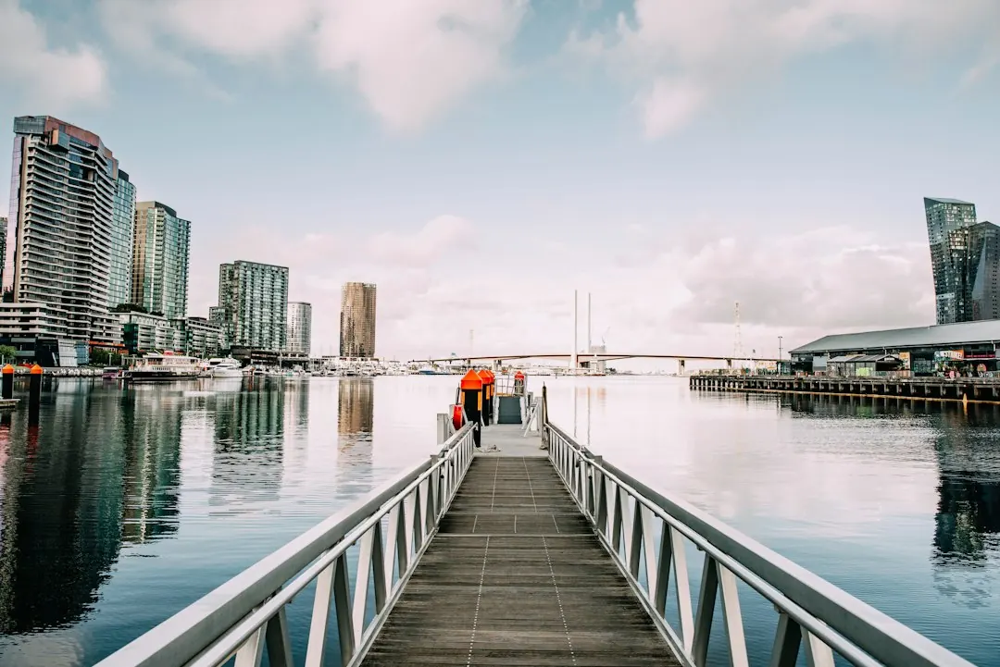

A Melbourne switchboard replacement typically costs $800 to $3,500 or more for single-phase work, and $3,000 to $5,000 or more for three-phase work. The final price depends on circuit count, existing wiring and the scope identified by a licensed electrician. Common work includes replacing ceramic fuses, adding safety switches and circuit breakers, addressing asbestos-backed boards, and preparing for solar or a smart meter. Completed work includes a Certificate of Electrical Safety.
For homeowners comparing switchboard replacement melbourne options, the practical decision is whether the existing board can support safer circuit protection, current household demand and planned electrical equipment.
Switchboard Replacement Melbourne Explained
Switchboard Upgrades Melbourne describes older Melbourne homes that still use ceramic fuse-type boards, including rewireable fuses, limited spare capacity and no safety switches. A board that has not been upgraded since the 1980s or earlier may not suit the way a household now uses power.
Visible or recurring signs can help establish whether an assessment is worthwhile. Fuses that keep blowing, circuits that trip when the heater and kettle operate together, and a board without RCD protection are all useful details to report when requesting a quote. These signs do not identify the final repair by themselves, because the electrician also needs to check the wiring and individual circuits.
- Record which circuit trips or fuse fails, and what appliances were operating.
- Ask whether the existing board has safety switches, circuit breakers or RCBOs.
- Check whether solar, a smart meter or additional appliances are planned.
- Ask whether the board has asbestos backing before removal is discussed.
The useful question is not simply whether the board looks old. It is whether the board, wiring and protection devices are suitable for the home's present and planned electrical load.
Choosing the work your property needs
A straightforward single-phase upgrade generally replaces old fuse carriers with modern circuit breakers and safety switches, while allowing room for future circuits. Most homes use single-phase power, but larger homes, workshops and properties with higher-draw appliances may require three-phase power. The latter is more involved and needs to be scoped during the assessment.
Safety switches and circuit breakers perform different protective roles. An RCD safety switch is designed to cut power when it detects current leaking to earth. A circuit breaker protects a circuit against overload. An RCBO combines overload protection and safety switch protection in one device. The electrician should explain which arrangement is proposed for each circuit, rather than leaving the homeowner to compare labels alone.
Solar and smart meter plans should be raised before the quote is finalised. The board may need suitable capacity and modern circuit protection for the new equipment. Ask whether the proposed work includes compatibility checks, spare capacity and any changes needed to the existing wiring.
Asbestos-backed boards and removal decisions
Some older ceramic fuse-type boards have asbestos backing. That changes the removal question and should be identified before work begins. The published guidance from Switchboard Upgrades Melbourne states that a trained electrician can handle a small, sound, non-friable board within strict limits. Where those limits do not apply, a licensed asbestos removalist is required.
Ask the assessing electrician to identify the backing material, explain who is authorised to remove it and state whether disposal is included in the quote. Do not treat asbestos removal as an automatic part of an ordinary fuse box replacement. The relevant method depends on the condition and size of the board, as well as the requirements applying to the work.
A quote should separate the electrical upgrade from any asbestos-related removal or disposal line. That makes it easier to compare proposals and reduces the chance that an important part of the job is assumed rather than documented.
Comparing quotes and compliance documents
The published Melbourne price guide gives a typical range of $800 to $3,500 or more for a single-phase switchboard upgrade. A typical three-phase upgrade is listed at $3,000 to $5,000 or more. These are guide ranges, not guaranteed prices. Circuit count, existing wiring condition and the complexity of the work affect the final quote.
Before accepting a proposal, ask for the board type, number of circuits, safety switch or RCBO arrangement, treatment of old fuses, asbestos assumptions and any solar or smart meter preparation. Also ask what is excluded. A clear quote should identify whether testing, disposal and certification are included.
Victoria requires a Certificate of Electrical Safety for electrical installation work. A main switchboard replacement is prescribed work, and the published process states that an independent licensed electrical inspector checks it as set out in Energy Safe Victoria's certificate guidelines. Keep the certificate with the property's electrical records.
Who this guide applies to
This guide is for Melbourne homeowners assessing an old ceramic fuse board, planning a safety switch or circuit breaker upgrade, replacing an asbestos-backed board, or preparing a property for solar, a smart meter or additional appliances.
It is also useful for anyone comparing a single-phase and three-phase proposal. The correct choice depends on the existing supply, the property's equipment and the electrician's assessment. Homeowners seeking a second local perspective can also read the Melbourne switchboard replacement overview, then use the same quote questions when discussing the job.
The named business publishes a no-obligation quote process, but an independent reader should still compare the written scope, licensing details, asbestos arrangements and certificate process before proceeding.
- Describe the existing board. Note the fuse type, tripping or blowing history, visible safety switches, planned appliances and any possible asbestos backing.
- Arrange an assessment. Have a licensed electrician inspect the switchboard, wiring and circuits before a final recommendation is made.
- Compare the written scope. Check devices, circuit count, asbestos treatment, disposal, solar or smart meter preparation, exclusions and the final price.
- Confirm certification. Ask how testing is handled and retain the Certificate of Electrical Safety issued after compliant work.
| Option | Typical published range | When it may be considered |
|---|---|---|
| Single-phase | $800 to $3,500+ | Common home upgrade involving old fuses, safety switches, circuit breakers and future circuit space |
| Three-phase | $3,000 to $5,000+ | Larger homes, workshops or properties with higher-draw appliances; scope requires assessment |
Common questions
How much does a Melbourne switchboard upgrade cost? The published guide lists $800 to $3,500 or more for a typical single-phase upgrade and $3,000 to $5,000 or more for a typical three-phase upgrade. Circuit count, wiring condition and complexity determine the final quote.
Should an old ceramic fuse box be replaced? An assessment is sensible where fuses keep blowing, circuits trip under normal appliance use, or the board has no RCD protection. The electrician should inspect the wiring and circuits before recommending replacement.
Can an asbestos-backed switchboard be removed by an electrician? A trained electrician may handle a small, sound, non-friable board within strict limits. Otherwise, the published guidance says a licensed asbestos removalist is required.
What document should be issued after the work? The completed electrical installation work should include a Certificate of Electrical Safety. A main switchboard replacement is prescribed work and is checked by an independent licensed electrical inspector under the stated Victorian process.
Should solar or a smart meter be mentioned before quoting? Yes. State any planned solar, smart meter or new appliances during the assessment so capacity, circuit protection and compatibility can be considered in the proposed scope.
This guide covers Melbourne switchboard assessments, protection upgrades, asbestos-backed boards, quote comparisons and certification.